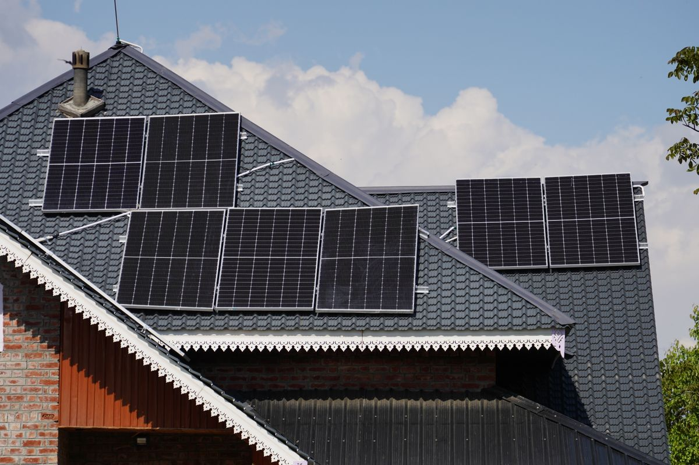
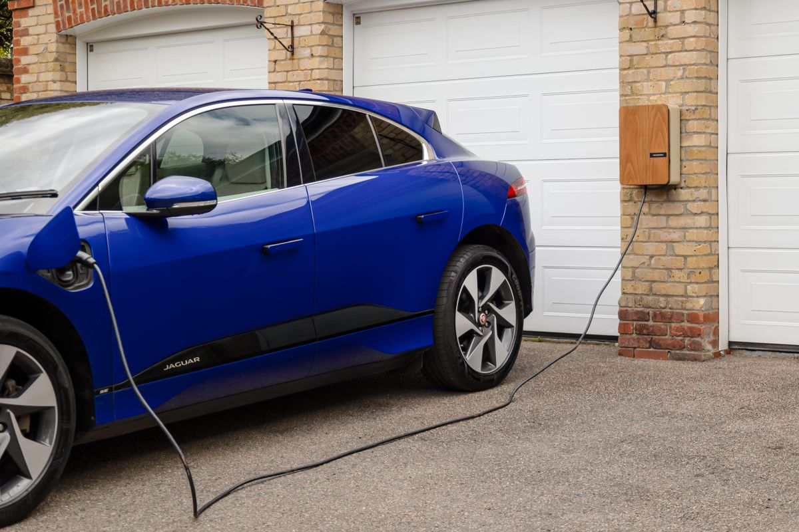
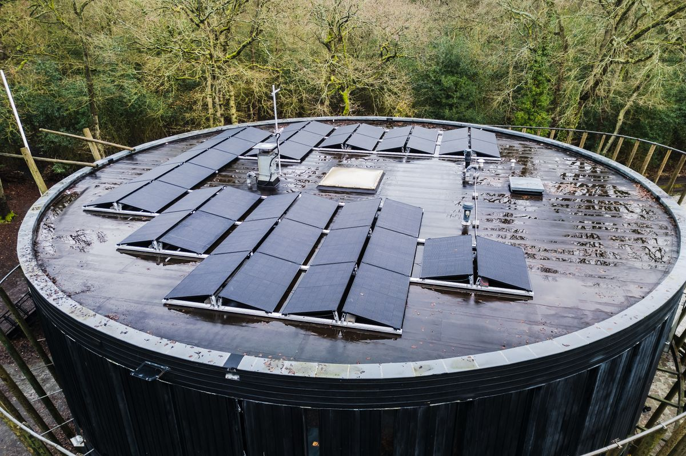
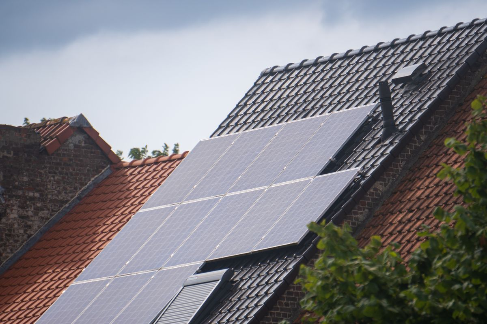
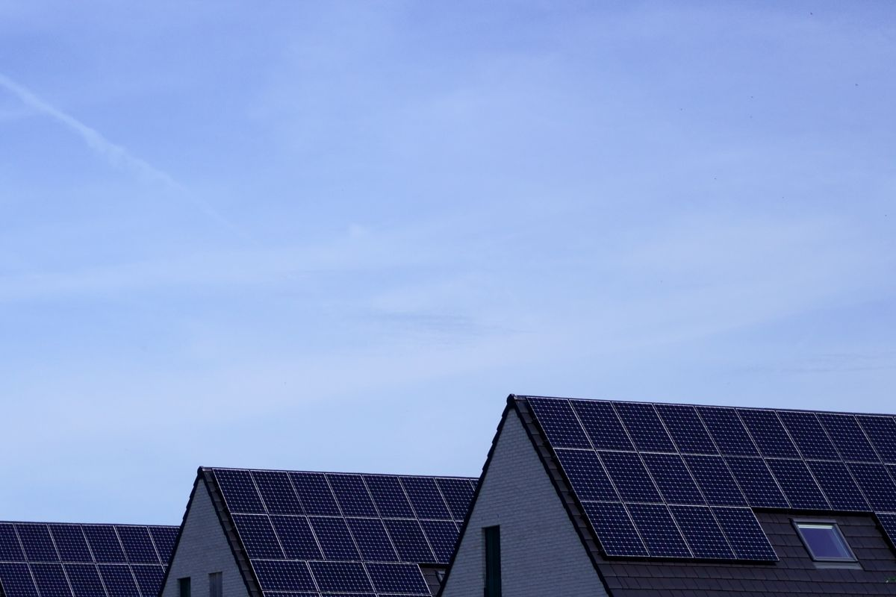
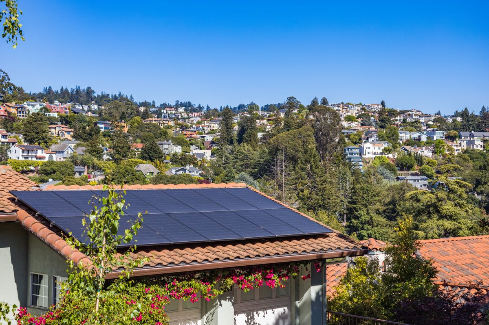
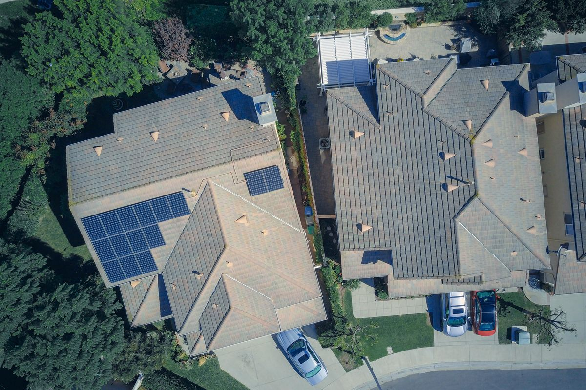
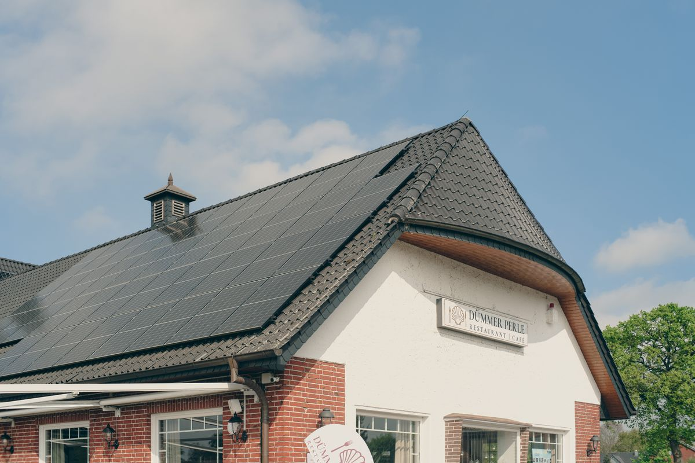
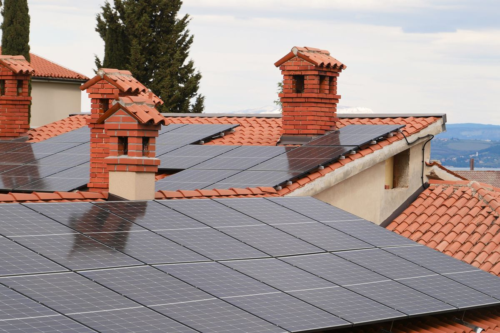

- Start
- Projekt
Referensprojekt
Tolv anläggningar i Stockholmsområdet
Tolv driftsatta tak mellan 2021 och 2026, tillsammans 166,6 kWp. Varje kort visar ort, effekt, år och vad vi byggde utöver panelerna.

Portföljen
Fyra siffror för de tolv projekten
166,6
kWp installerad effekt i de tolv projekten
42
kWp i den största anläggningen, Brf Solgläntan i Täby
13,9
kWp i snitt per anläggning, median 10,8 kWp
950
kWh solel per installerad kWp och år i söderläge
Solceller & Energi Stockholm AB har byggt alla tolv med egen personal: 8 montörer och 3 elektriker. Kontoret ligger på Kungsgatan 12, 111 43 Stockholm, och vi har öppet Mån–fre 07.30–17.00, akut service vardagar till 20.00. Org.nr är 559214-9351. Vill du se en anläggning i din kommun, ring +46 70 494 90 87.
Siffrorna i bandet är toppeffekt, inte årlig produktion. Räknar du 950 kWh per installerad kWp och år i söderläge landar de tolv anläggningarna på ca 158 000 kWh per år.
Galleri
Tolv tak, tolv olika jobb
Korten står i samma ordning som tabellen längre ner. Minst är ett radhus i Solna på 6,4 kWp, störst Brf Solgläntan i Täby på 42 kWp.

Nacka

Täby, Brf Solgläntan

Sollentuna

Värmdö

Danderyd

Solna

Lidingö

Huddinge

Älvsjö

Österåker

Järfälla
Projekten är exempel i demoversionen och byts mot kundens egna referensobjekt vid leverans. Fotografierna är stockbilder: de visar samma typ av tak och arbete, inte de enskilda fastigheterna.
Tre jobb i detalj
Det som inte syns på ett kort
Samma paneler, tre olika problem. Så löste vi dem, och så mycket ger de i drift.
Bromma: elcentral från 1988 och kran över häcken
Takyta: 48 m² i söderläge på tegeltak, två takfall. Elcentralen hade ingen ledig grupp, så vi bytte den först och drog ny kabel i befintlig rörväg. Panelerna lyfte vi med kranbil över häcken. Resultat: 9,6 kWp, ca 9 120 kWh per år, och elräkningen föll med ca 13 000 kr per år.
Täby: fyra hustak och två skorstenar mitt i fältet
Brf Solgläntan ville ha offert per huskropp och en faktura föreningen kunde följa i årsredovisningen. Vi mätte fyra tak. Två av dem hade skorstenar mitt i det läge där panelerna hade gett mest. Vi byggde i tre etapper. De 42 kWp ger ca 39 900 kWh per år, och överskottet säljer föreningen vidare på timpris.
Nacka: eken skuggade det västra takfallet
Grannens ek kastade skugga över västra fallet mellan klockan 14 och 16. Vi satte optimerare per modul i stället för att dra om strängarna. De 14,2 kWp ger ca 12 950 kWh per år, alltså ca 96 procent av vad ett rent söderläge hade gett. Ett år senare tog vi bort två paneler ur skuggan och mätte om.
Bra att veta: Vi säger nej till tak i norrläge och till tak äldre än 20 år utan åtgärd. Då blir återbetalningstiden längre än garantin, och det beskedet får du innan du beställer något.
Före och efter
Köpt el per år för en villa på 130 m² med värmepump
Villan finns inte i galleriet. Siffrorna bygger på samma nyckeltal som vi använder i varje offert i Stockholmsområdet.
Köpt el per år idag14 000 kWh
Med 10 kWp och batteri 10 kWh6 590 kWh
Grå = idagGuld = efter installation
Taket räcker till 10 kWp
Förbrukning: 14 000 kWh per år. Elpris: 1,80 kr per kWh inklusive nät och skatt. Taket har 48 m² skuggfri yta i söderläge. Med 0,2 kWp per kvadratmeter räcker ytan till ca 10 kWp.
Anläggningen producerar ca 9 500 kWh per år. Utan batteri stannar ca 40 procent i huset. Med batteri på 10 kWh stiger egenanvändningen till ca 78 procent, alltså ca 7 410 kWh. Resten, ca 2 090 kWh, säljs för ca 0,70 kr per kWh.
Besparingen landar på ca 14 800 kr per år: 13 340 kr för elen du slipper köpa och 1 460 kr för överskottet. Paketet 10 kWp med batteri kostar 191 000 kr före grön teknik och ca 134 200 kr efter. Alla priser står i prislistan.
Så fördelar sig elen
- Egenanvändning utan batteri: ca 40 procent
- Egenanvändning med batteri 10 kWh: ca 78 procent
- El du slipper köpa: ca 7 410 kWh per år
- El som säljs vidare: ca 2 090 kWh per år
- Återbetalningstid med dagens elpris: ca 9 år
Schablonvärden: 950 kWh per installerad kWp och år i söderläge, 1,80 kr per kWh köpt el och 0,70 kr per kWh för såld el. Prova dina egna siffror i kalkylatorn.
Alla tolv
Projekten i en tabell
De tolv projekten i samma ordning som korten. Effekten är installerad kWp, på tak eller markställning.
| Ort | Effekt, kWp | År | Innehåll |
|---|---|---|---|
| Bromma | 9,6 | 2024 | villa, tegeltak, batteri 10 kWh |
| Nacka | 14,2 | 2023 | villa, två takfall, optimerare per modul |
| Täby, Brf Solgläntan | 42 | 2022 | bostadsrättsförening, fyra hustak |
| Sollentuna | 7,8 | 2025 | villa, laddbox 11 kW |
| Värmdö | 11,4 | 2023 | villa, batteri 10 kWh |
| Danderyd | 16,8 | 2021 | stor villa och garage, två växelriktare |
| Solna | 6,4 | 2024 | radhus, takfall mot sydväst |
| Lidingö | 12,5 | 2022 | villa, två riktningar, optimerare per modul |
| Huddinge | 8,9 | 2025 | villa, laddbox 11 kW |
| Älvsjö | 10,2 | 2024 | villa, batteri 10 kWh och energikoll |
| Österåker | 19,6 | 2023 | lantställe, markställning, egen mätning |
| Järfälla | 7,2 | 2026 | villa, serviceavtal |
| Summa | 166,6 | 2021–2026 | elva småhus och en bostadsrättsförening |
Effekten är avrundad till en decimal. Produktionen räknar vi med 950 kWh per installerad kWp och år i söderläge. Siffrorna är demovärden och byts mot kundens egna projektdata vid leverans.
Omdömen
Vad kunderna säger om jobben
Omdömena är exempel i demoversionen och byts mot kundens egna recensioner vid leverans. Vill du prata med en tidigare kund i din kommun, mejla vberg024@gmail.com.
Montage, el och efterkontroll
Så gick jobbet till på taken
01 · Kontroll före överlämning
Fyra saker vi mäter innan vi lämnar ett tak
Alla tolv projekt har gått genom samma ordning: mäta taket, mäta elcentralen, bygga, mäta igen. Avvikelsen mellan beräknad och uppmätt produktion ska vara under 5 procent innan vi skickar slutdokumentationen till dig.
- Infästning: vi tar upp takpannorna och lägger tillbaka dem, nya pannor där vi gått upp, tätning vid varje genomföring.
- El: ny grupp i elcentralen, märkt och dokumenterad, jordfelsbrytare typ B när batteri ingår.
- Kablage: kabelväg i rör, märkning vid växelriktaren, inga lösa kablar över vindsbjälkar.
- Drift: vi kontrollerar strängspänning, produktion och appuppkoppling samma dag som anläggningen startas.

Underlag
Så räknar vi fram siffrorna bakom korten
Vi räknar varje projekt med samma fyra nyckeltal, så två anläggningar går att jämföra rakt av.
Solel i Stockholm ger ca 950 kWh per installerad kWp och år i söderläge med 35 till 45 graders lutning. Ost och väst ger ca 86 procent av det, sydost och sydväst ca 96 procent. Takytan avgör hur mycket effekt som får plats: ca 0,2 kWp per kvadratmeter skuggfri yta.
Egenanvändningen är den siffra som avgör besparingen. Utan batteri stannar ca 40 procent av solelen i huset, med batteri ca 78 procent. Överskottet säljs för ca 0,70 kr per kWh med timprisavtal i SE3.
Korten visar installerad effekt och år, inte uppmätt produktion per fastighet. Vill du se produktionsdata från en anläggning som liknar din, säg till när vi bokar takkollen. Vi tar fram loggarna från växelriktaren och går igenom dem med dig.
Normalproduktion över året, 10 kWp i söderläge
Staplarna visar månadsproduktion i procent av junitoppen. Juni ger mest, december minst. Osäker på ditt tak? Läs om hur vi arbetar eller ring +46 70 494 90 87.
Frågor och svar
Frågor vi får om referenserna
Får jag se en anläggning innan jag bestämmer mig?
Ja. Vi har anläggningar i 15 orter, så det finns nästan alltid ett tak i din kommun. Du kan följa med på en takkoll hos en kund i samma område, eller få produktionsdata från en anläggning som liknar din. Besöket bokar vi i samband med din egen takkoll.
Hur mycket el ger en anläggning på 10 kWp i Stockholm?
Ca 9 500 kWh per år i söderläge med 35 till 45 graders lutning. Ost och väst ger ca 86 procent av det, sydost och sydväst ca 96 procent. Med batteri stannar ca 78 procent av elen i huset i stället för ca 40 procent.
Varför är Danderyd från 2021 och Järfälla från 2026?
Korten står i den ordning projekten blev klara: Danderyd äldst, Järfälla nyast. Äldre anläggningar ger något mindre per kWp i dag, eftersom panelerna tappar ca 0,5 procent av effekten per år.
Kan jag prata med en tidigare kund?
Ja, med kundens tillstånd. Vi förmedlar kontakt med villaägare och föreningsstyrelser i din kommun, och du får gärna fråga om ekonomin och om hur jobbet sköttes. Referenserna byts mot kundens egna vid leverans, eftersom det här är en demoversion. Mejla vberg024@gmail.com så bokar vi ett samtal.
Vill du se ett tak som liknar ditt?
Skicka din adress, så tittar vi på taket i kartan innan vi kommer ut. Takkollen tar 45 till 60 minuter och offerten kommer inom 48 timmar.
Kostnadsfritt och utan bindning. +46 70 494 90 87 · Solceller & Energi Stockholm AB, org.nr 559214-9351, Kungsgatan 12, 111 43 Stockholm · Mån–fre 07.30–17.00, akut service vardagar till 20.00